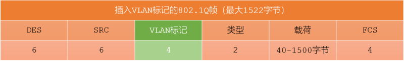

Medium Access Control
@MAC- 概述 Overview
- MAC - Medium Access Control
- 又叫物理地址、硬件地址，固化在适配器的ROM中
- IEEE802.3规定MAC地址为长度6 byte，共48 bit
- 高24位(前3 byte)是公司标识符 OUI - Organization Unique Identifier
由注册管理机构RA - Registration Authority 分配
- 低24位(后3 byte)是扩展标识符 EUI - Extended Unique Identifier
由公司指定
- 48位 = 24位OUI + 24位EUI
- 分类 Type
- 单播帧 unicast：
一对一
目的MAC地址是一个单播地址。单播地址的第一个字节的最低有效位I/G（Individual/Group）为0
00:1A:2B:3C:4D:5E
- 广播帧 broadcast：
一对全体
固定为 FF:FF:FF:FF:FF:FF。第一个字节的最低有效位I/G为1，并且所有48位都为1
- 多播帧 multicast：
一对多
第一个字节的最低有效位I/G为1，但不是全1
01:00:5E:00:00:01
- 判断是单播还是多播/广播，最核心的依据是目的MAC地址第一个字节的最低位（I/G位）：
I/G位 = 0: 单播地址 (Individual/Unicast)
I/G位 = 1: 组地址 (Group Address)，包括多播和广播
- 在组地址中，再通过地址值区分多播和广播：
FF:FF:FF:FF:FF:FF 是广播
其他I/G位为1的地址是多播
[] MAC地址查询
C:\Users\huawei>ipconfig /all
Windows IP 配置
主机名 . . . . . . . . . . . . . : LAPTOP-E61J88MK
主 DNS 后缀 . . . . . . . . . . . :
节点类型 . . . . . . . . . . . . : 混合
IP 路由已启用 . . . . . . . . . . : 否
WINS 代理已启用 . . . . . . . . . : 否
无线局域网适配器 本地连接* 1:
媒体状态 . . . . . . . . . . . . : 媒体已断开连接
连接特定的 DNS 后缀 . . . . . . . :
描述. . . . . . . . . . . . . . . : Microsoft Wi-Fi Direct Virtual Adapter
物理地址. . . . . . . . . . . . . : 84-C5-A6-A5-37-0B
DHCP 已启用 . . . . . . . . . . . : 是
自动配置已启用. . . . . . . . . . : 是
无线局域网适配器 本地连接* 2:
媒体状态 . . . . . . . . . . . . : 媒体已断开连接
连接特定的 DNS 后缀 . . . . . . . :
描述. . . . . . . . . . . . . . . : Microsoft Wi-Fi Direct Virtual Adapter #2
物理地址. . . . . . . . . . . . . : 86-C5-A6-A5-37-0A
DHCP 已启用 . . . . . . . . . . . : 否
自动配置已启用. . . . . . . . . . : 是
无线局域网适配器 WLAN:
连接特定的 DNS 后缀 . . . . . . . :
描述. . . . . . . . . . . . . . . : Intel(R) Wireless-AC 9560 160MHz
物理地址. . . . . . . . . . . . . : 84-C5-A6-A5-37-0A
DHCP 已启用 . . . . . . . . . . . : 是
自动配置已启用. . . . . . . . . . : 是
本地链接 IPv6 地址. . . . . . . . : fe80::e7a0:718a:6876:e4ce%7(首选)
IPv4 地址 . . . . . . . . . . . . : 10.23.233.111(首选)
子网掩码 . . . . . . . . . . . . : 255.255.128.0
获得租约的时间 . . . . . . . . . : 2025年10月28日 10:19:08
租约过期的时间 . . . . . . . . . : 2025年10月29日 21:15:13
默认网关. . . . . . . . . . . . . : 10.23.255.254
DHCP 服务器 . . . . . . . . . . . : 10.23.255.254
DHCPv6 IAID . . . . . . . . . . . : 92587430
DHCPv6 客户端 DUID . . . . . . . : 00-01-00-01-30-4F-13-E5-84-C5-A6-A5-37-0A
DNS 服务器 . . . . . . . . . . . : 202.96.128.86
202.96.128.166
TCPIP 上的 NetBIOS . . . . . . . : 已启用
以太网适配器 蓝牙网络连接:
媒体状态 . . . . . . . . . . . . : 媒体已断开连接
连接特定的 DNS 后缀 . . . . . . . :
描述. . . . . . . . . . . . . . . : Bluetooth Device (Personal Area Network)
物理地址. . . . . . . . . . . . . : 84-C5-A6-A5-37-0E
DHCP 已启用 . . . . . . . . . . . : 是
自动配置已启用. . . . . . . . . . : 是
C:\Users\huawei>
LSB - Least Significant Bit；最低有效位
MSB - Most Significant Bit；最高有效位
网卡出厂时烧录的MAC地址，其第一个字节的LSB总是0，因此它是一个单播地址。这是物理固定的
多播/广播是逻辑概念
MAC帧结构 Frame
- 标准
- 以太网V2标准，使用最广泛
- IEEE 802.3标准
- 长度：最小64 byte
- Preamble
- 前导码
- 7 byte
- 0xAA AA AA AA AA AA AA
- 用于物理层接收端的时钟同步。接收机通过检测这个规律的信号，调整自己的采样时钟，使其与发送方同步
- 是帧接收的第一步，不包含在实际数据长度内
- SFD - Start Frame Delimiter
- 帧起始定界符
- 1 byte
- 0xAB；10101011
- 标志着有效帧的开始。打破了Preamble的交替模式（最后两位为11），告诉接收端：现在开始接收真正的帧头了
- SFD 是帧的正式起点，但不是MAC帧的一部分
- Destination MAC
- 目的MAC地址
- 6 byte
- 标识该帧要发送到的目标设备的物理地址 - MAC地址
- 全球唯一（如由厂商分配），用于局域网内的寻址
- Source MAC
- 源MAC地址
- 6 byte
- 标识发送该帧的设备的物理地址
- 用于响应（如ARP回复）、网络故障排查等
- Type
- 类型和长度
- 2 byte
- 上层使用的协议
IPv4: 0x0800
ARP: 0x0806
- 决定了 Data 部分如何被解析
- Data
- 数据载荷
- 46 到 1500 byte
- 最小长度：46 byte；不足，会用填充字节补足
- 最大长度：1500 byte；标准的MTU - Maximum Transmission Unit
- 封装的上层协议数据，如IP包、ARP请求等
- 总帧长限制：整个以太网帧（不含Preamble和SFD）最大为 1518 byte = 1500 byte + 6 byte + 6 byte + 2 byte + 4 byte
- FCS
- Frame Check Sequence
- 4 byte
- 帧校验序列；用于检错
- 使用 CRC-32 算法计算出的校验码
- 接收端收到帧后，重新计算CRC并与FCS比较，若不一致则认为帧损坏，丢弃该帧
- 位于帧的末尾
- 校验范围：目的 MAC + 源 MAC 地址 + 数据 Data + 类型和长度 + FCS；不包括前导码和帧起始定界符
- 接收方（网卡/NIC）收到帧后，会：
使用相同的 CRC-32 算法 对帧内容（目的 MAC 到数据）重新计算 CRC
将计算结果与帧中的 FCS 字段比对
若不匹配 → 帧被判定为损坏 → 立即丢弃，不通知上层
上层看不见错误帧
- 以太网带宽 Bandwidth
- 含义：每秒处理的bit - bps
- 完整的帧长度包含8byte的前导码和12byte的空闲帧
- 前导码用于同步同步发送方/接收方的bit流，提示有效帧内容的开始
- 计算带宽时，使用的帧长是完整帧长，否则计算出来的仅仅是以太网的有效带宽
| Preamble | SFD | Frame | IFG |
| 7 | 1 | 12 |
| Destination MAC | Source MAC | Type | Data | FCS |
| 6 | 6 | 2 | 46-1500 | 4 |
收到的帧都是正确的帧 - 没有比特级的错误



当 MAC 帧通过物理介质（如双绞线、光纤）传输时，物理层（PHY）会在它前面加上额外的信息，并在帧与帧之间留出空隙
实际的帧要比MAC帧多8 byte
因为帧之间有传输间隙，所以不需要帧结束的界定
帧的最小时间间隔 96比特时间 - Inter-Frame Gap, IFG
Summary & Homework
- Summary
- 一个操作：查看本机物理地址/MAC
- 一个结构：帧结构
- 一个数字：帧的数据部分 ≥46 byte
- Reading